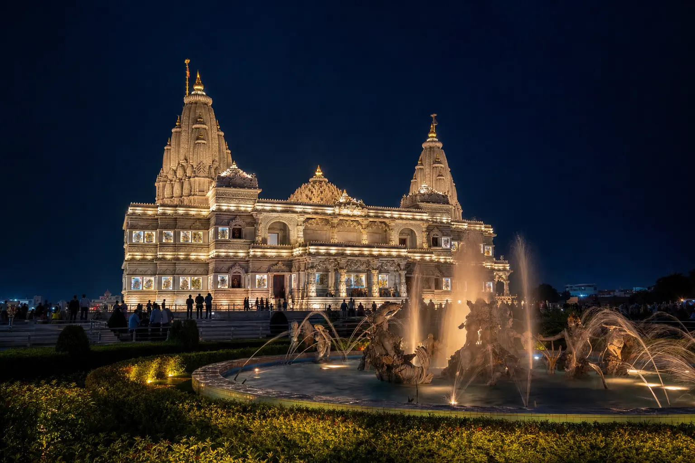
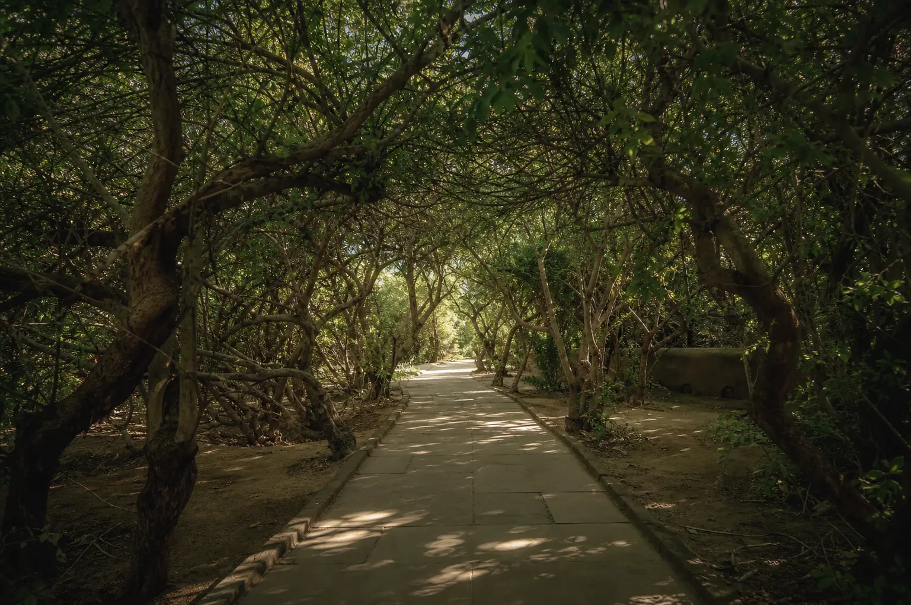

Agra To Vrindavan Cab₹1,800 One Way · ₹3,000 With Mathura
70–75 KM Via NH-2
About 2 Hrs · Fixed Fare

Temple Timings Decide The Day, Not The Distance
The drive from Agra is under two hours. What actually shapes a Vrindavan day is darshan timing — Banke Bihari shuts between the morning and evening sessions, Nidhivan closes at sunset, and the Prem Mandir light show is worth staying for. A private cab lets you sit out a closure over lunch instead of losing the temple, and lets you shift the order on the day if a queue is long.
Agra To Vrindavan Cab At A Glance
70–75 KM
Via NH-2, Through Mathura
1.5–2 HRS
Drive Time, Traffic Depending
₹1,800
One Way, AC Sedan
BOTH WAYS
Vrindavan To Agra Too
Agra To Vrindavan Cab Fare
Starting fares for the whole vehicle, not per person. The round-trip column covers stops in both Mathura and Vrindavan, since the road passes through Mathura either way.
| Cab Type | Seats | One Way | Round Trip |
|---|---|---|---|
| AC Sedan (Dzire / Amaze) | 4 | from ₹1,800 | ₹3,000 |
| AC SUV (Ertiga) | 6 | from ₹2,200 | ₹3,800 |
| AC SUV (Innova) | 7 | from ₹2,800 | ₹4,500 |
| Tempo Traveller | 12–15 | from ₹4,500 | ₹7,500 |
Fares cover fuel and driver charges. Tolls and temple parking are paid separately, at actuals. See the full Agra taxi fare list for every other route and package.
The Vrindavan Temples Most People Ask For
Your driver knows the lanes and the parking, and can suggest an order that works around the day’s darshan timings. Which of these you see is your call.
Banke Bihari Temple
Vrindavan’s best-known temple, in the narrow lanes of the old town. Known for jhanki darshan, where the curtain is drawn and closed at intervals rather than left open.
Prem Mandir
The white marble temple built by Jagadguru Kripalu Maharaj, on the edge of town. Most visitors time their evening around the light show.
ISKCON Krishna Balaram Mandir
Founded by Srila Prabhupada. Calmer than the old-town temples, with a well-known prasadam hall.
Nidhivan
A grove of low, intertwined trees. By tradition it is closed to everyone after sunset, so it has to be fitted into the daytime part of your plan.
Kesi Ghat & The Yamuna
The riverfront ghat, quietest in the early morning and busiest for the evening aarti.
Radha Vallabh Temple
One of the oldest temples in Vrindavan, dating to 1585, and architecturally distinct from its neighbours.
The Road From Agra To Vrindavan
- 70–75 km via NH-2 towards Delhi, then off the highway into the Mathura–Vrindavan road.
- 1.5 to 2 hours of driving — highway for most of it, town roads for the last stretch.
- The route passes through Mathura, so Krishna Janmabhoomi can be added on the way out or on the way back at no detour.
- Pickup from your hotel, home, Agra Cantt or Kheria Airport — anywhere in Agra city.
- The reverse leg is also available. If you are already in Vrindavan, call and we arrange a pickup within 30–60 minutes.

Quiet Between The TemplesClear Fare Breakdown
What Your Vrindavan Booking Includes
One cab, one driver, one price agreed before you leave Agra.
Included On Every Booking
- Private AC Cab — Not Shared
- Door-To-Door Pickup Anywhere In Agra
- Driver Waiting At Each Temple (Round Trip)
- Mathura Stops On A Round Trip
- Fuel And Driver Charges
- Driver Name, Number And Car Number Before Pickup
Paid Separately By You
- Highway Tolls, At Actuals
- Temple And Ghat Parking
- Any Entry Tickets, Meals And Offerings
Why Pilgrims Book A Private Cab For Vrindavan
Darshan Timings Are Awkward
Temples close between sessions. With your own cab you wait it out nearby instead of dropping a temple from the plan.
The Lanes Are Narrow
Old-town Vrindavan is not easy to drive or park in. Drivers who run this route know where to stop and where to wait.
Belongings Stay In The Car
Shoes, bags and phones stay with the vehicle while you go in for darshan.
Mathura Costs You Nothing Extra
The road already goes through it. On a round trip, Mathura stops are part of the same fare.
The Price Before You Commit
Whatever the date, you have the fare in writing before you book. Janmashtami and Holi are the busiest days of the year here, so ask early.
Both Directions
Agra to Vrindavan, or Vrindavan back to Agra with a 30–60 minute pickup.
Booking Your Agra To Vrindavan Cab
01 — Send Your Trip Details
Travel date, pickup time and point in Agra, passengers, one way or round trip, and the temples you want to cover.
02 — Fixed Fare Confirmed
We confirm the fare in writing, with tolls and parking identified separately. No advance is needed for most bookings.
03 — Driver Details Shared
Name, mobile number and car number before pickup — match the plate before you board.
If You Want More Than Vrindavan
Vrindavan sits inside a cluster of Krishna sites, and the published fares step up in a straight line: the two-town full day is ₹3,000, adding Barsana makes it ₹3,500. Send us the list of places you have in mind and we will say which booking covers it.
Agra to Mathura Taxi
Just Mathura — Krishna Janmabhoomi, Dwarkadhish and the ghats.
From ₹1,500 one wayMathura + Vrindavan Full Day
Both towns in one day, out and back from Agra with the driver waiting throughout.
₹3,000 full dayMathura, Vrindavan & Barsana
The longer pilgrimage day, adding the Radha Rani temple at Barsana.
₹3,500 full dayRead Before You Go
Best Temples In Vrindavan By Cab
Six temples worth a day, and a sensible order to see them in.
Travel GuideMathura & Vrindavan Travel Guide
Temples, timings, festivals and practical tips for a first visit.
Travel GuideAgra – Mathura – Vrindavan In One Day
A worked itinerary for fitting both towns into a single day from Agra.
ItineraryLocal Agra Operator
Your Local Travel Partner In Agra
Padma Shree Travels operates from Shamsabad, Agra, running local sightseeing, station and airport transfers, pilgrimage trips and outstation routes. Also runs Govardhan and the wider temple routes from Agra.
- Your fare Fares are confirmed on WhatsApp before you travel, with tolls and parking identified separately.
- Your driver Your driver’s name, mobile number and car registration number are shared before pickup.
- Pickup and drop Pickup from any Agra address — hotel, home, Agra Cantt or Kheria Airport — and from Vrindavan for the return leg.
Direct WhatsApp and phone support before and during your trip.
.jpg)
Agra To Vrindavan Cab — Questions & Answers
What is the taxi fare from Agra to Vrindavan?
The Agra to Vrindavan cab fare starts at ₹1,800 for a one-way trip in an AC sedan. The ₹3,000 round trip covers stops in both Mathura and Vrindavan. The fare covers fuel and driver charges, and tolls and parking are paid separately.
How far is Vrindavan from Agra?
Vrindavan is approximately 70 to 75 km from Agra via NH-2. The journey takes about 1.5 to 2 hours depending on traffic, and the route passes through Mathura.
Can I visit both Mathura and Vrindavan in one trip?
Yes, and most travellers do, because the road to Vrindavan goes through Mathura anyway. The ₹3,000 round trip covers stops in both towns — Krishna Janmabhoomi and Dwarkadhish in Mathura, then Banke Bihari and Prem Mandir in Vrindavan.
Which temples can I visit in Vrindavan?
The usual circuit is Banke Bihari Temple, Prem Mandir, the ISKCON Krishna Balaram Mandir, Radha Vallabh Temple, Nidhivan, Seva Kunj and the Yamuna ghats at Kesi Ghat. Your driver waits at each stop, so you choose how long to spend.
What cars are available for an Agra to Vrindavan cab?
AC sedans (Maruti Dzire, Honda Amaze) seat up to 4 passengers, AC SUVs (Maruti Ertiga, Toyota Innova) seat 6 to 7, and a Tempo Traveller is available for groups of 12 to 15.
Is the cab available during festivals like Janmashtami and Holi?
Yes, the service runs every day of the year including festivals. Book well in advance for Janmashtami and Holi — Vrindavan is extremely busy on those days and cars go early.
Do you provide pickup from Vrindavan back to Agra?
Yes, we run both directions. If you are already in Vrindavan and need a cab back to Agra, call +91-87200-81102 and we will arrange pickup within 30 to 60 minutes.
Other Routes From Agra
Agra to Mathura & Vrindavan
Combined round trip covering both holy cities from Agra.
₹3,000 round tripAgra to Govardhan Taxi
Govardhan Parikrama, Radha Kund and Kusum Sarovar.
Fare on WhatsAppTemple Tours From Agra
Every pilgrimage route we run, in one place.
View pilgrimage routesAgra Local Sightseeing
Taj Mahal, Agra Fort and Akbar’s Tomb — a full day in the city.
From ₹2,500Full Agra Taxi Fare List
Every route and package we run, with fares in one place.
All faresAll Outstation Cabs from Agra
Browse every outstation route we run from Agra.
View routesPlanning A Vrindavan Day From Agra?
Fixed fare in writing. Driver waits at every temple.
Send your travel date, pickup point and the temples you want to cover — we confirm the fare and the plan before you leave Agra.